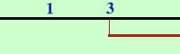
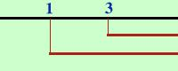

|
x Sulla retta reale considero i due valori 3 e 1 nella prima disequazione del sistema ho x maggiore di 3 quindi faccio una riga e segno i valori maggiori di tre  nella seconda disequazione del sistema ho x maggiore di 1 quindi faccio un'altra riga e prendo i valori maggiori di uno  Essendo un sistema devo prendere i valori che vanno bene sia per la prima che per la seconda disequazione, cioe' i valori comuni (in blu)  ottengo x |